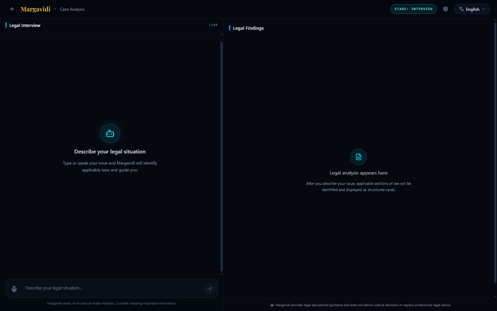
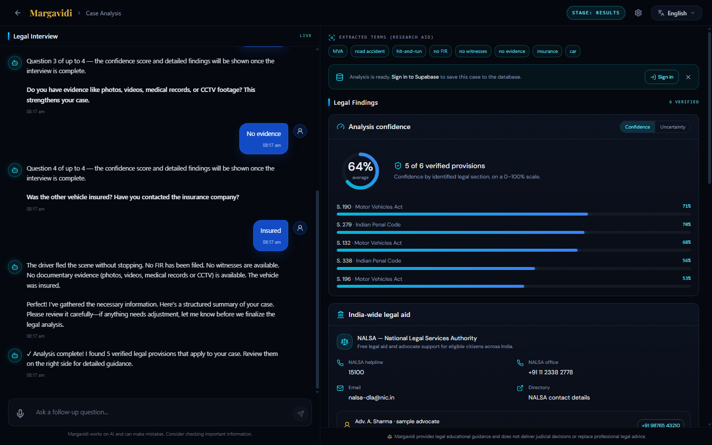
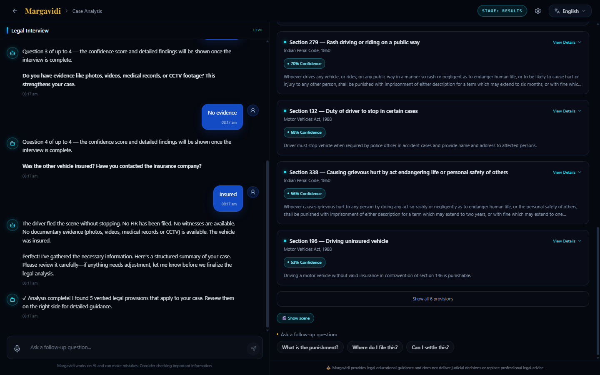

Everything used to design, build and verify the application — the product flow, the four-layer analysis engine, the 94-section legal dataset, the design system, every library, and the checks that keep it honest.
The document moves from the product, to the engine, to the data, to the code and finally to the operational details. Each page is self-contained, so it can be read in order or used as a reference.
A browser-only React app that interviews a citizen about a legal problem, matches the facts against a curated Indian-law dataset, shows a reviewable summary, and then reveals ranked provisions with honest confidence, uncertainty and free legal-aid contacts.
This is legal education, not legal advice. Confidence measures text/fact alignment, not the strength of a case. Supabase saving is a UI placeholder; no case data is persisted.
Most legal-search tools return a wall of sections from one sentence. Margavidi runs a short, structured interview, states the facts back to the user, and only then unlocks the findings. The design goal is not to look confident — it is to be inspectable.
A citizen describing an accident rarely uses statutory language. They say “the truck fled” or “the brakes failed”, not “Section 134 Motor Vehicles Act”. A keyword engine misses the first; a generative model may invent the second. The app therefore combines a deterministic rule engine, a local semantic model and an optional, validated AI fallback.
The second problem is trust. A single percentage hides which facts are missing. The interface separates confidence (how well the text matched) from uncertainty (what could change the answer), and gives free NALSA contacts instead of a dead end.

The analysis may already be computed, but the interface withholds it. A case moves through interview → summary → results; editing the summary sends it back through the engine.
The opening message is analysed immediately. If the engine needs a fact, the assistant asks one question at a time with option chips. The reference order for road accidents is FIR → witnesses → evidence → insurance, followed by injury, hit-and-run, alcohol, licence, speeding, wrong side and vehicle type.
Progress is shown as “Question n of up to 4”. A Skip — show best answer chip ends the interview. The incident-type question is the one exception: it cannot be skipped, because without a domain there is nothing to search.
The app restates the facts in plain English: who was hurt, whether the driver fled, FIR, witnesses, evidence, insurance. Two actions are offered: Confirm analysis or Edit details. No section cards, confidence score or punishment are shown yet.
Editing is not cosmetic. The correction is appended to the original description; answers that conflict with the correction are deleted from the collected context and the engine runs again.
Confirmation unlocks the full stack: extracted terms, save banner, confidence, NALSA, summary, uncertainty, then up to five provision cards. Follow-up chips answer punishment, filing forum and settlement questions from the current result.
interview
│ answer / skip
├── question? ──→ interview
└── complete ───→ summary
│
┌─────────┴─────────┐
confirm edit
│ │
▼ ▼
results interview
│ (re-run)
├── follow-up → chat answer
└── new case → interview
| SKIP | Ends the interview; the best current answer is shown and the skip adds no confidence. |
| EDIT | Drops conflicting chip answers, merges the typed correction, re-runs the engine. |
| CONFIRM | Reveals results. There is no route around this gate. |
| NEW CASE | Resets messages, facts, stage, scene and follow-ups. |
| FOLLOW-UP | Answered from the current top result, not a new search. |
Reference alignment. The stack, card limit and both confidence views follow the two supplied design references. The section ranking remains relevance-based, so Section 134 is not hard-coded to appear first.
There is no application server. React renders the interface, an orchestrator owns the conversation state, and a chain of three analysis engines reads from bundled legal data.
CaseAnalysis.tsx. Owns messages, stage, pending question, pending summary, scene visibility and the analysis request id. Debounces runs and cancels stale results.analyze.ts. Runs the rule engine first; escalates weak matches to optional Gemini, then to local semantic search, then returns the honest rule result with a note.acts.json, section-embeddings.json) plus localStorage for the Gemini key/model and semantic-vector cache. No database is connected.analyzeCaseSmart() calls the deterministic rule engine with the text and answers.| Nothing | for a strong local rule match |
| Case text | to Google AI only when a key is set and the local match is weak |
| Model file | downloaded once from Hugging Face for semantic search |
| Supabase | nothing — banner is UI-only |
The rule engine is deliberately simple and inspectable: classify the domain, score every section, add fact-specific boosts, then decide whether it knows enough to answer.
Tokens are lowercased, stopped and stemmed, then expanded with a synonym map. Three disambiguation rules run before generic scoring because common nouns otherwise dominate:
Otherwise each domain keyword adds a vote; the winning share becomes domain confidence. Below 30% the app asks what kind of incident occurred instead of guessing.
| Signal | Weight | What it means |
|---|---|---|
| Keyword match | 40% | Exact phrase on word boundaries; partial token matches earn proportionally less. |
| Content overlap | 40% | Query tokens found in the section’s explanation and official text, capped at 100. |
| Rule boost | 20% | Hand-written patterns: theft, extortion, drunk driving, hacking, road accident. |
| Fact boost | +30 | Added after scoring; specific facts promote specific sections. |
| < 30% domain | Ask “what kind of incident was this?” once. |
| < 15 score | Return “Insufficient information”; no cards. |
| < 60 score | Weak match: try Gemini, then semantic search. |
| ≥ 60 score | Strong enough: return the rule result and skip cloud calls. |
After sorting, duplicate act/section pairs are removed. The top section is always kept; every later section must have real evidence and score at least 50% of the top score. At most 6 sections are returned. This is why the interface can say “6 verified” while showing five.
A clause-level parser reads the story for the details that change legal relevance — injury, fleeing, brake failure, insurance, FIR — and uses them to personalise both the score and the summary.
| Fact group | Detected from |
|---|---|
| Injury | injur*, wound, hurt, bleeding, fracture, hospital, ICU, surgery; negation is handled clause by clause. |
| Who / how many | “me and my wife”, “both of us”, number + injury within 35 characters; distinguishes self, companion and bystander. |
| Brake failure | brake + fail/problem/defect/leak; “brakes were fine” and “I had to brake” are explicitly excluded. |
| Fleeing | fled, ran away, drove off, without stopping, hit and run; “stopped” overrides. |
| Driving | overspeeding, rash/dangerous, wrong side/opposite lane, drunk/alcohol; sober negates. |
| Documents | no/without licence (not “licence plate”), uninsured, FIR filed/not filed. |
| Procedure | witnesses, no witnesses, evidence, photos, CCTV, medical records; explicit absence is recorded. |
| Severity | death, fatal, grievous, serious injury, ICU, surgery. |
| Other domains | theft/robbery, threat/extortion, unauthorised access, data theft, financial loss. |
| Brake failure | MVA 190 +25 |
| Death | IPC 304A +20 |
| Grievous hurt | IPC 338 +15 |
| Injury | IPC 337 / MVA 134 +10 |
| Fled | MVA 132 / 134 +10 |
| Speeding | MVA 183, 184; IPC 279 +8 |
| Wrong side | MVA 184 +8 |
| Drunk | MVA 185 +15 |
| No licence | MVA 3 / 181 +12 |
| Uninsured | MVA 196 +12 |
| Fled / hit-and-run | +20 |
| Positive fact (“filed”, “insured”, “valid”) | +6 |
| Free-text detail | +5 |
| Negative, unsure or “no witnesses” | +1 |
| Skip | 0 |
Negatives resolve a fact but are not evidence that a section applies. That distinction was a deliberate bug fix.
A question is available only if it has not been asked and the fact is still unknown. The engine picks the first available key from a domain priority list, asks at most 4 for MVA and 1 for IPC/IT Act, and stops immediately when the user skips. Every question stores its text so a later answer (“Yes”) can be shown as a labelled Q/A pair.
The summary is assembled from known facts only: injury and companions, death, brake failure, fleeing, speeding, wrong side, alcohol, licence, FIR, witnesses, evidence and insurance. Unknown facts are omitted rather than guessed. A brake-failure case adds a balanced liability note: the owner/operator may share responsibility, but the driver may argue the failure was unforeseen.
The fallbacks are not interchangeable. The rule engine is cheapest and most predictable; the semantic model handles paraphrase locally; Gemini handles genuinely novel phrasing only when the user has supplied a key.
Model: Xenova/bge-small-en-v1.5, a quantized sentence-transformer run
through Transformers.js. The query is prefixed with the model’s retrieval instruction,
embedded to a 384-dimension vector, and compared with precomputed section vectors by cosine
similarity.
| Threshold | 0.45 cosine similarity |
| Candidates | top 12, filtered to the hinted domain |
| Confidence | min(80, 30 + similarity × 70) + boosts, capped at 80 |
| Vectors | precomputed at build time; regenerated by script |
| First use | downloads ~23 MB model; browser-cached |
Semantic confidence is intentionally capped lower than a strong rule/Gemini match: a meaning-based guess should not look more certain than a direct legal-text match.
Offline first use, a blocked CDN or a browser without the required features falls back to the rule result. The UI shows a note saying the semantic model was unavailable; it does not silently pretend a semantic match happened.
A direct REST call to the Generative Language API (v1beta). The prompt includes
the full section catalog and demands strict JSON: case summary, facts, 3–6 matches,
clarification question, liability notes.
gemini-3.8-flashVITE_GEMINI_BASE_URL
Every returned section is looked up by act + number in acts.json. Invented
sections are discarded; if none survive, the app falls through to semantic search.
Safety/recitation blocks and HTTP errors are converted into readable messages.
| Hallucination | catalog-only prompt + local validation |
| Repeats | normalised question text prevents asking the same thing twice |
| Runaway | 4-question ceiling; AI keys are ai_1…ai_4 |
| Silent switch | if Gemini asked the last question, the next answer stays with Gemini |
| Transparency | result badge says Google AI, Semantic AI or Offline rules |
The knowledge base is deliberately small and curated. Every card the app can show comes from this file; no section is generated at runtime.
| Field | Used for |
|---|---|
| act_name | Domain filter, card subtitle, validation key |
| section_number | Card title and fact boosts |
| section_title | Heading and rule patterns |
| official_text | “Applicable law” text; semantic overlap |
| simplified_explanation | Plain-language card body; semantic overlap |
| punishment | Punishment field and follow-up answer |
| legal_procedure_guidance | “What to do” guidance |
| keywords[] | Exact/phrase keyword scoring |
| chapter_* / domain | Metadata; helps curation and review |
{
"act_name": "Motor Vehicles Act, 1988",
"section_number": "3",
"section_title": "Necessity for driving licence",
"official_text": "No person shall drive ...",
"simplified_explanation": "A person cannot
drive ... without a valid driving licence.",
"punishment": "Penalties under Section 181.",
"keywords": ["driving without licence",
"valid licence", "DL requirement"]
}
scripts/build-embeddings.mjs embeds each section’s title, explanation and keywords
with the same model used at runtime. It writes a JSON file containing
the model name, dimensions, IDs and vectors.
At runtime the bundled vectors are used only if the model name, count and ID order match the current dataset. Otherwise the app rebuilds vectors and caches them in localStorage.
Editing acts.json without regenerating embeddings silently breaks semantic
search: the app detects the mismatch and rebuilds in the browser, which is slow and needs
internet on first use. Always run the script after data edits.
MVA: licensing, accident duties, insurance, speed, alcohol, unsafe vehicles and penalties. IPC: theft, robbery, hurt, negligence, extortion, mischief. IT Act: unauthorised access, data theft, identity offences, cheating. The dataset is not exhaustive and still uses IPC 1860 / MVA 1988 labels; it does not map to the Bharatiya Nyaya Sanhita, 2023.
The right panel follows the reference exactly: context first, then confidence, then help, then the facts, then the uncertainty note, then the provision cards.

Each card shows the section, Act, confidence badge and a short explanation. View Details expands the official text, punishment and what-to-do guidance. Cards are collapsible, not modal, so the user can compare provisions without losing their place.
MAX_VISIBLE_SECTIONS = 5. The panel filters out preliminary cards, slices to five,
and only renders the toggle when extras exist. The count in “Show all” is the full verified
count, which can be six.
15100 · NALSA helpline
+91 11 2338 2778 · office
nalsa-dla@nic.in · email
nalsa.gov.in · directory
Questions are scripted per domain. Each one maps to a fact used in scoring, the summary, or the uncertainty note. Options are offered as chips, but free text is always accepted.
| Key | Question | Options |
|---|---|---|
| fir | Have you filed a police complaint (FIR) about the accident? | Filed · Not yet · Planning to file |
| witnesses | Were there witnesses who saw what happened? Can you provide their contact details or descriptions? | Yes · No witnesses · Not sure |
| evidence | Do you have evidence like photos, videos, medical records, or CCTV footage? | Yes · No evidence · Not sure |
| insurance | Was the other vehicle insured? Have you contacted the insurance company? | Insured · Not insured · Not sure |
| injured | Was anyone injured in the accident? | Yes · No · Not sure |
| hit_and_run | Did the driver stop after the accident or flee the scene? | Stopped · Fled / Hit-and-run · Not sure |
| drunk | Was the driver under the influence of alcohol? | Yes · No · Not sure |
| licence | Did the other driver have a valid licence? | Valid licence · No licence · Not sure |
| overspeeding | Was the driver overspeeding or driving recklessly? | Yes · No · Not sure |
| wrong_side | Was the vehicle being driven on the wrong side of the road? | Yes · No · Not sure |
| vehicle_type | What kind of vehicle hit you? | Car · Bike / Scooter · Truck · Bus · Not sure |
| injured | Was anyone physically injured or assaulted? | Yes · No · Not sure |
| property | Was any property stolen or damaged? | Yes · No · Not sure |
| threat | Were any threats or intimidation involved? | Yes · No · Not sure |
| unauthorized_access | Was there unauthorized access to your computer or accounts? | Yes · No · Not sure |
| data_theft | Was any personal data stolen or leaked? | Yes · No · Not sure |
| financial_loss | Did you suffer financial loss due to the incident? | Yes · No · Not sure |
The skip chip is translated to “Skip — show best answer”, recorded as an answer, and sets
readyForResult. It contributes 0 confidence. The incident-type question
deliberately has no skip chip.
Four answered questions, a skip, a strong enough score for non-MVA domains, or no remaining unknown fact. After that the engine returns a final result and the summary gate opens.
Every colour is an HSL token in src/index.css; components never use ad-hoc hex values.
The look is a warm gold wordmark over a cool, instrument-panel interface.
Radius token 0.75rem. Cards use 12–16 px radii, 1 px low-contrast borders and
compact Tailwind spacing (space-y-3.5). The interface is intentionally dense:
9–13 px text inside panels, larger serif only for the brand and page titles.
| panel-surface | Gradient panel with a soft border |
| glass-card | Translucent blur surface |
| cyan-rule | 3 px gradient divider before headings |
| stage-pill | Monospace uppercase stage badge |
| user-bubble | Blue chat bubble with shadow |
| confidence-track | Muted 6 px bar; fill uses cyan→blue |
| btn-glow | Cyan glow and one-pixel lift |
| grid-texture | 40 px technical grid overlay |
| card-lift | Spring hover lift on landing cards |
Micro-animations run 0.3–0.7 s with cubic-bezier easing: fade-in, slide-up, scale-in,
chip-select, float, scales-sway, pulse-glow, waveform. The case scene has its own 5.5 s loops
(enter, impact, skid, flee, rain, wheels). prefers-reduced-motion disables every
scene-* animation. The scene is opt-in via “Show scene” and its files were not
modified in this redesign.
Reference cues: near-black navy surfaces, cyan rule marks, gold serif brand, monospace micro-labels, thin bordered cards, a donut plus horizontal bars, and a warm amber note for uncertainty.
The app is a standard Vite SPA. Business logic is isolated in four files under src/lib;
the UI never re-implements scoring or fact extraction.
src/ ├─ pages/ │ ├─ LandingPage.tsx marketing + domain cards │ ├─ CaseAnalysis.tsx stage machine, chat, wiring │ └─ NotFound.tsx ├─ components/ │ ├─ ChatPanel.tsx message list + typing state │ ├─ LegalOutputPanel.tsx results stack + 5-card gate │ ├─ LegalResponseCard.tsx │ ├─ FollowUpChips.tsx option/result chips │ ├─ VoiceInput.tsx Web Speech API │ ├─ LanguageSwitcher.tsx │ ├─ AiSettings.tsx Gemini key + test │ ├─ CaseSceneAnimation.tsx │ └─ analysis/ confidence, terms, aid, │ summary, uncertainty, save banner ├─ lib/ │ ├─ search.ts rules, facts, questions │ ├─ analyze.ts engine orchestration │ ├─ semantic.ts local embeddings │ ├─ gemini.ts optional cloud fallback │ └─ scene.ts animation facts (locked) ├─ assets/ │ ├─ acts.json 94 sections │ ├─ section-embeddings.json │ └─ hero-bg.jpg ├─ contexts/LanguageContext.tsx ├─ test/ 8 files · 114 tests └─ index.css all design tokens
| Core | react 18.3 · react-dom · react-router-dom 6.30 · typescript 5.8 · vite 5.4 · @vitejs/plugin-react-swc |
| Styling | tailwindcss 3.4 · tailwindcss-animate · @tailwindcss/typography · class-variance-authority · clsx · tailwind-merge |
| UI kit | shadcn/ui patterns over Radix primitives · lucide-react · sonner · recharts · vaul · cmdk · embla-carousel-react · react-day-picker · react-resizable-panels · input-otp · next-themes |
| Forms | react-hook-form · @hookform/resolvers · zod |
| Data | @tanstack/react-query · date-fns |
| AI / ML | @xenova/transformers 2.17 (Transformers.js) · Google Generative Language REST (no SDK) |
| Testing | vitest 3.2 · @testing-library/react · @testing-library/jest-dom · jsdom |
| Tooling | eslint 9 · typescript-eslint · eslint-plugin-react-hooks · eslint-plugin-react-refresh · postcss · autoprefixer · lovable-tagger |
Radix/shadcn gives accessible dialogs, tabs and tooltips without a design lock-in. Tailwind keeps the dense panel system consistent. Transformers.js is the only way to run a sentence model fully in the browser. There is no Supabase client because saving is not implemented.
Node.js 18+ is the only prerequisite. The app runs offline after installation, except for the optional semantic model download and the optional Gemini call.
| Command | What it does |
|---|---|
| npm install | Install all dependencies |
| npm run dev | Start Vite; open the URL it prints |
| start-e-vakil.bat | Windows helper: install if needed, then start the dev server |
| npm run build | Production build into dist/ |
| npm run preview | Serve the production build locally |
| npm test | Run the 114 Vitest tests once |
| npm run typecheck | tsc --noEmit |
| npm run lint | ESLint over the repository |
| npm run embeddings | Regenerate section vectors after data edits |
1. Edit src/assets/acts.json.
2. Run npm run embeddings.
3. Run npm test and npm run typecheck.
4. Check a known query end-to-end in the browser.
VITE_GOOGLE_AI_API_KEY — optional Gemini key. Prefer the in-app settings panel for local use.
VITE_GEMINI_MODEL — default gemini-3.8-flash.
VITE_GEMINI_BASE_URL — point to a backend proxy; defaults to Google’s API.
The results screen shows a save banner, but no Supabase client is installed and no case is
written anywhere. Clicking Sign in raises a toast explaining that
VITE_SUPABASE_URL and VITE_SUPABASE_ANON_KEY are required.
To implement it: add the client, create an auth flow, define a cases table with row-level security, then replace the banner handler with a real save/sign-in action.
| Semantic model fails | First use needs internet; check the Hugging Face CDN, then retry. |
| Gemini 401/403 | Key rejected; re-enter it in AI Settings. |
| Gemini 429 | Quota/rate limit; the offline fallback is used. |
| Blank page after build | Serve dist/; do not open index.html from disk. |
| Port in use | Vite prints an alternate port; or stop the old dev server. |
The project is covered by unit, component and regression tests, then verified with a real headless-browser walkthrough of the full interview.
| Test file | Focus |
|---|---|
| search.test.ts | Domain routing, section ranking, 4-question interview, fact parsing, summaries, research terms, negative-answer confidence, follow-up order. |
| analyze.test.ts | Smart-engine orchestration, weak-match escalation, semantic result shape, fallback notes. |
| gemini.test.ts | JSON parsing, catalog validation, hallucinated-section rejection, question handling, confidence clamping. |
| regression.test.ts | Historic failure cases: stolen car vs accident, assault vs road, brake mention, duplicate sections. |
| legal-output-panel.test.tsx | Five-card default, Show all, Confidence/Uncertainty tabs, summary confirm/edit gate. |
| legal-card-preliminary.test.tsx | Preliminary cards hidden; confidence and punishment withheld until confirmation. |
| scene-animation.test.tsx | Scene fact detection and rendering; 13 tests remain green after the redesign. |
| example.test.ts | Baseline environment smoke test. |
| npm test | 114 passed · 8 files · ~4.1 s |
| npm run typecheck | passed |
| npm run lint | 0 errors · 9 pre-existing warnings |
| npm run build | production build succeeded |
Accident description → FIR → witnesses → evidence → insurance → summary review → confirm → results. Verified that the gate hides findings, the donut and bars agree, Show all reveals the sixth card, and the static NALSA details render.

Honest limits are part of the product. These are the boundaries to state whenever the app is demonstrated, reviewed or extended.
Core analysis is local. There is no analytics, telemetry or backend. A case description is
sent to Google only when the local match is weak and the user has configured a key.
A browser-stored key is visible to anyone who can run code on the page, so a public deployment
should use VITE_GEMINI_BASE_URL with a server-side proxy.
To remove local traces: clear the Gemini key/model in AI Settings and delete the
evakil.semantic.vectors.v1 localStorage entry.
| MVA | Motor Vehicles Act, 1988. |
| IPC | Indian Penal Code, 1860. |
| IT Act | Information Technology Act, 2000. |
| FIR | First Information Report, the police complaint that starts a criminal case. |
| NALSA | National Legal Services Authority; free legal aid. |
| MACT | Motor Accident Claims Tribunal. |
| Embedding | A numeric vector representing meaning. |
| Cosine similarity | Angle-based similarity between two vectors, −1 to 1. |
| Preliminary | A match while a question is pending; scores are capped and cards withheld. |
| Summary gate | The mandatory confirm/edit step before results. |
Closing: Margavidi is an educational triage tool. It should always be presented with its limits, its data sources, and a route to a qualified advocate.